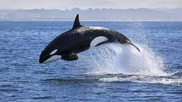
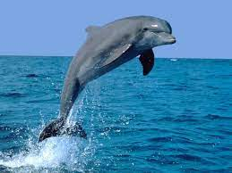
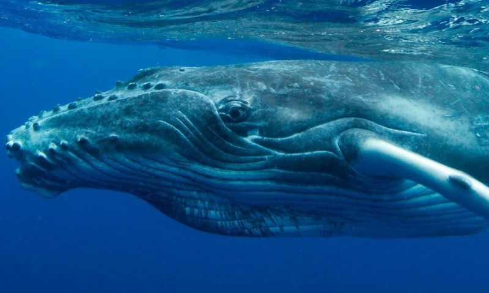
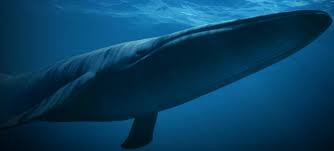

<DOCTYPE html>

  <head>
    <meta charset="utf-8">
    <title> orca </title>
  </head>

<p></img><p>

<style>


/*Colocamos una imagen de fondo al 'body' de nuestras páginas*/

body {  
  
  background-color: #777; 
}


/*Creamos la clase 'center' de forma que podamos centrar, por ejemplo, las tablas de nuestras páginas*/

.center{

	margin-left: auto;
	margin-right: auto;
}


/*Le damos formato a los encabezados H1*/
h1 {
  font-weight: bold;
  text-align: center;   
  font-family: Monaco, "Bitstream Vera Sans Mono", "Lucida Console", Terminal, monospace;
  color: #fff;
  
}

h2 {

  font-weight: bold;
  text-align: left;  
  font-family: Monaco, "Bitstream Vera Sans Mono", "Lucida Console", Terminal, monospace;
  color: white 	;

}

p, ul {

  font-family: Verdana, Helvetica, sans-serif;
  color: #fff;
  font-size: 12px; 

}


/*Le damos formato a los pies de imagen*/
figcaption {

  text-align: center;
}


/*Le damos formato a las imágenes*/
img {
  
  display: block;
  width: 50px;
  height: 50px;
  width: 100%;

}

</style>


<table border = '10' class= 'center' >  

<tr>
	<td><a href = 'html/casa.html'> <figcaption> Casa </figcaptaion></a></td>
                
	
           
        <td><a href = 'html/delfín.html'> <figcaptaion> Delfín</figcaptation></a></td>
	
 	<td><a href = 'html/ballena_jorobada.html'>  <figacaptation> Ballena_jorobada</figcaptation></a></td>
	
</tr>

<tr> 
	 <td><a href = 'html/delfín_de_río.html'> <figcatation> Delfín_de_río</figcaptation></a></td>

	 <td><a href = 'html/ballena_azul.html'> <figcaptation> Ballena_azul</figcaptation></a></td>
	
       	 <td><a href = 'html/orca.html'> <figcaptation> Orca</figcaptation></a></td>
               
</tr>
</html>

<h1> Orcinus orca </h1>

<body> 

<h2>La orca (Orcinus orca) es una especie de cetáceo odontoceto perteneciente a la familia Delphinidae (delfines oceánicos), que habita en todos los océanos del planeta. Es la especie más grande de delfínido y la única existente actual reconocida dentro del género Orcinus.

Este cetáceo posee una complexión robusta e hidrodinámica. La especie, como característica distintiva, posee una aleta dorsal muy larga que llega a medir hasta 1,8 m en los machos y presenta una coloración blanca y negra que se distribuye de manera particular, la cual es propia de cada individuo y permite distinguirlo de los demás. La orca tiene un dimorfismo sexual marcado; las hembras son más pequeñas que los machos y tienen la aleta dorsal más corta. Mientras que una hembra suele pesar menos de 4 t y rondar los 7,7 m de largo, un macho adulto puede alcanzar un peso de 5,5 t y medir hasta 9 m de longitud.

Los individuos de la especie forman estructuras sociales complejas y se organizan en grupos matrilineales (descendencia definida por la línea materna); para facilitar la socialización utilizan un método de comunicación sofisticado. Se han identificado varios tipos de orca en los hemisferios norte y sur, los cuales tienen diferencias genéticas, morfológicas, comportamentales y alimentarias tan notables, que incluso se han propuesto como especies diferentes. La orca posee una combinación de fuerza, velocidad e inteligencia que la convierte en un depredador muy versátil; de hecho, por encontrarse en la cima de la cadena alimentaria y no poseer enemigos naturales se convierte en un superdepredador de los océanos. Su dieta es muy variada y, dependiendo del tipo de orca, se alimenta de peces, calamares y mamíferos marinos. Como superdepredador en la cúspide de la cadena trófica, sin ningún enemigo o depredador natural, la orca es capaz, incluso, de alimentarse de especies tan grandes y tan bien preparadas para el ataque como ellas mismas. Así, no sólo compiten con otros animales en la caza de focas, delfines, grandes calamares o peces, sino que, además, se han constatado casos de orcas atacando a tiburones blancos en aguas del océano Pacífico en el área de California, frente a las costas de San Francisco, donde se han registrado y grabado especímenes de orcas devorando grandes tiburones blancos, sobre todo en la época del año en la que son más frecuentes los avistamientos de estos últimos cerca de la costa. 3​

Se distribuye por todos los océanos del mundo, desde las aguas del Ártico y Antártico hasta los mares tropicales; sin embargo, prefiere las aguas templadas y frías, y las zonas cercanas a las costas. Es una especie migratoria, llegando algunos grupos a desplazarse miles de kilómetros, incluso entre ambos hemisferios. Para 2008, según lo publicado en la Lista Roja de la UICN, la población mundial superaba los 50 000 individuos. En el mismo año, se catalogó como especie con datos insuficientes (del inglés Data Deficient, DD); decisión justificada ante la posibilidad de que existan dos o más especies, lo cual obligaría a establecer el riesgo específico para cada una de ellas. Al carecer de depredadores naturales todas las amenazas son dependientes de la acción del ser humano. Entre estas cabe mencionar la contaminación secundaria a plaguicidas, el ruido producido por elementos y dispositivos acústicos, el deterioro de su hábitat, las capturas accidentales durante operaciones de pesca y la caza.

Desde la antigüedad, en la cultura occidental se lo consideró un animal feroz y peligroso. Esa imagen empezó a cambiar desde la década de 1960, al observarse que los primeros animales en cautiverio se comportaban dócilmente y no intentaban agredir a los humanos. Se han registrado muy pocos ataques a humanos por parte de individuos en libertad, sin ninguna muerte; sin embargo, los ejemplares en cautiverio, probablemente debido al estrés que les causa la situación, se han cobrado algunas víctimas. </h2>
